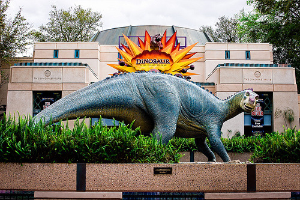

Located at the center of the park, this area includes the Tree of Life.
There are many trails leading off of the area around the Tree of Life,
and these trails lead to different animal enclosures.
It really looks like the animals you're seeing are in their natural habitats.
Inside the tree of life, there's actually a 3D show called It's Tough to be a Bug.
This show is based off of the Pixar movie A Bug's Life, and basically shows you how hard it is being a bug, and that bugs are your friends.
It's really cute! At least until ants begin "crawling" across your feet (it's actually just a sensory trick, but it feels real).
This is a small area themed to be a wilderness camp hosted by Mickey and Minnie.
It hosts a lot of character meet and greets, mostly animal characters that you would expect to find at a wilderness camp.
There's also a theater that houses Festival of the Lion King, a theatrical stage show based on the movie The Lion King.
It's got singing, dancing, and storytelling; and also includes Simba, Timon, and Pumbaa.
This area is a fictional African village called Harambe.
There is one main attraction here called Kilimanjaro Safaris.
This attraction is extremely similar to what a real African safari would be like.
You're not on a ride; you board a safari jeep and have your own safari guide.
They drive you through Disney's huge man-made Savannah, and you get to see all the animals that live here.
The animals are freely roaming, which means they aren't caged or behind glass walls.
You're driving on the road in this Savannah! I can't explain how cool this is, animals can actually come as close to you as they want.
. Remember when I said that Animal Kingdom was incredibly immersive? Here's a great example of that!
This is an area that is accessible only by train, and focuses on endangered species.
There are a ton of endangered species in habitats here, and Rafiki from the Lion King helps educate you on why they're important and what's happening to them in the wild.
It's really informative and is especially great for younger kids.
Asia is similar to Africa in the fact that it's a fictional village in Asia called Anandapur.
The themeing here is gorgeous, and you seriously feel like you're in a remote Asian village.
The Maharajah Jungle Trek leads guests through the forests outside the village, where you can see many native animals that would be located here.
Asia has two rides: Kali River Rapids and Expedition Everest.
Kali River Rapids is a water raft ride through the Chakranadi River.
You will get absolutely soaked on this ride, but it's so much fun! You're in a huge white water rafting raft and it twists and turns so much that literally everyone on the raft gets soaked.
Expedition Everest is a roller coaster through the Himalayan Mountains.
It's fast and full of twists and turns, and you'll actually encounter a huge, terrifying yeti.
This area is inspired by man-kind's curiosity and fascination with dinosaurs.
There are two sub-divisions of this area; The Dino Institute and Chester and Hester's Dino-Rama.
The Dino Institute takes a more scientific approach to Dinosaurs, and includes a thrill ride called DINOSAUR (I didn't hit caps lock for special effect, the actual ride title is in all capital letters).
This ride is a trip on a time machine back in time to save the last dinosaur from the meteor shower that made the dinosaurs extinct.
It's actually a terrifying ride, full of life-size dinosaur anamatronics in a dim, meteor-lighted forest.
I'll admit, the last time I went on this ride I cried like a little girl.
It's scary. Chester and Hester's Dino-Rama is supposed to be a humorous approach on Dinosaurs, and is themed like a midway carnival.
Animal Kingdom doesn't have any kind of nighttime show, because something like fireworks would upset a lot of the animals.
If' you're concerned about the well-being of all the animals that are here, you'll be assured to know that the park has been accredited by the Association of Zoos and Aquariums and the World Association of Zoos and Aquariums,
meaning they have met or exceeded the standards in education, conservation, and research
Actually on opening day there were about two dozen protesters from PETA who really didn't want this park to open!
Apparently they thought that Disney would mistreat these animals, which was far from true.
Animal Kingdom is a great park full of wonder and immersive experiences with animals.
